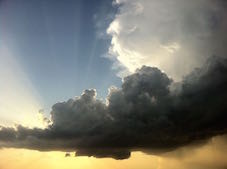
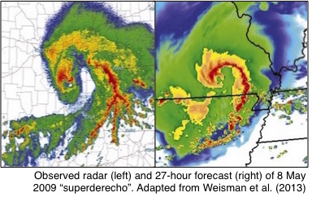

Ryan Sobash
NCAR/MMM, P.O. Box 3000, Boulder, CO 80307-3000
sobash at ucar dot edu
I'm currently affiliated with the National Center for Atmospheric Research (NCAR) in Boulder, CO as a Project Scientist. At NCAR, I work within the data assimilation group in the Mesoscale and Microscale Meteorology (MMM) Laboratory.
Research Interests: Improving forecasts of extreme, high-impact weather, such as severe convection and its associated hazards (tornadoes, high winds, large hail). To do so, I primarily utilize novel data assimilation techniques and ensemble forecasting methods.
- Research summary

- Much of my research involves improving predictions of convective weather and its hazards. These events are often challenging to predict given their small size and short lifetimes compared to larger-scale atmospheric phenomena, but routinely have substantial impacts on life and property.
- My interest in predictions span many time-scales, from short forecast lead-times to assist in improving warnings, to longer lead-times to improve predictions of storms occurring hours or days into the future.
- I frequently use tools such as ensemble data assimilation and high-resolution numerical weather prediction models that explicitly resolve convection. Ensemble systems are essential given the many uncertainties that exist with forecasting convective storms.
-
I'm also interesting in using ensemble systems to improve predictions of other high-impact weather phenomena, as well as ways to derive forecast guidance that incorporates uncertainty information from ensembles to improve decision-making.
- Education
- Ph. D. - University of Oklahoma, School of Meteorology, Adviser: Dr. David Stensrud, June 2010 - December 2013
- M.S. - University of Oklahoma, School of Meteorology, Adviser: Dr. Jack Kain, September 2006 - May 2010
- B.S. - The Pennsylvania State University, Major: Meteorology, September 2002 - May 2006
- Refereed Publications
- Clark, A. J., and Coauthors, 2018: The Community Leveraged Unified Ensemble (CLUE) in the 2016 NOAA/Hazardous Weather Testbed Spring Forecasting Experiment. Bull. of Amer. Meteor. Soc., in press.
- Sobash, R. A. and J. S. Kain, 2017: Seasonal variations in severe weather forecast skill in an experimental convection-allowing model. Wea. Forecasting, 32, 1885–1902.
- Gagne, D. J., A. McGovern, S. E. Haupt, R. A. Sobash, J. K. Williams, and M. Xue, 2017: Storm-Based Probabilistic Hail Forecasting with Machine Learning Applied to Convection-Allowing Ensembles. Wea. Forecasting, 32, 1819–1840.
- Schwartz, C. S. and G. S. Romine, K. R. Fossell, R. A. Sobash, and M. L. Weisman, 2017: Toward 1-km ensemble forecasts over large domains. Mon. Wea. Rev., 145, 2943–2969.
- Schwartz, C. S. and R. A. Sobash, 2017: Generating probabilistic forecasts from convection-allowing ensembles using neighborhood approaches: A review and recommendations. Mon. Wea. Rev., 145, 3397–3418
- Poterjoy, J., R. A. Sobash, and J. L. Anderson, 2017: Convective-scale data assimilation for the Weather Research and Forecasting model using the local particle filter. Mon. Wea. Rev., 145, 1897–1918.
- Sobash, R. A., G. S. Romine, C. S. Schwartz, D. J. Gagne, and M. L. Weisman, 2016: Explicit forecasts of low-level rotation from convection-allowing models for next-day tornado prediction. Wea. Forecasting, 31, 1591-1614.
- Sobash, R. A., C. S. Schwartz, G. S. Romine, K. R. Fossell, and M. L. Weisman, 2016: Severe weather prediction using storm surrogates from an ensemble forecasting system. Wea. Forecasting, 31, 255-271.
- Schwartz, C. S., G. S. Romine, R. A. Sobash, K. R. Fossell, and M. L. Weisman, 2015: NCAR's experimental real-time convection-allowing ensemble prediction system. Wea. Forecasting, 30, 1645-1654.
- Schwartz, C. S., G. S. Romine, M. L. Weisman, R. A. Sobash, K. R. Fossell, K. W. Manning, and S. B. Trier, 2015: A real-time convection-allowing ensemble prediction system initialized by mesoscale ensemble Kalman filter analyses. Wea. Forecasting, 30, 1158–1181.
- Sobash, R. A. and L. J. Wicker, 2015: On the impact of additive noise in storm-scale EnKF experiments, Mon. Wea. Rev., 143, 3067-3086.
- Weisman, M. L. and Coauthors, 2015: The Mesoscale Predictability Experiment (MPEX), Bull. of Amer. Meteor. Soc., 96, 2127–2149.
- Sobash, R. A. and D. J. Stensrud, 2015: Assimilating surface mesonet observations with the EnKF to improve ensemble forecasts of convection initiation, Mon. Wea. Rev., 143, 3700-3725.
- Sobash, R. A. and D. J. Stensrud, 2013: The impact of covariance localization for radar data on enKF analyses of a developing MCS: Observing system simulation experiments. Mon. Wea. Rev., 141, 3691-3709.
- Kain, J. S. and Coauthors, 2013: A feasibility study for probabilistic convection initiation forecasts based on explicit numerical guidance, Bull. of Amer. Meteor. Soc., 94, 1213-1225.
- Clark, A. J., S. J. Weiss, I. L. Jirak, M. Coniglio, C. J. Melick, C. Siewert, R. A. Sobash, and Coauthors, 2012: An Overview of the 2010 Hazardous Weather Testbed Experimental Forecast Program Spring Experiment, Bull. of Amer. Meteor. Soc., 93, 55-74.
- Sobash, R. A., J. S. Kain, D. R. Bright, A. R. Dean, M. C. Coniglio, and S. J. Weiss, 2011: Probabilistic forecast guidance for severe thunderstorms based on the identification of extreme phenomena in convection-allowing model forecasts. Wea. and Forecasting, 26, 714-728.
- Kain, J. S., S. R. Dembek, S. J. Weiss, J. L. Case, J. J. Levit, and R. A. Sobash, 2010: Extracting Unique Information from High Resolution Forecast Models: Monitoring Selected Fields and Phenomena Every Time Step. Wea. and Forecasting, 25, 1536-1542.
- Laird, N., R. Sobash, and N. Hodas, 2010: Climatological Conditions of Lake-Effect Precipitation Events associated with the New York State Finger Lakes.
J. Appl. Meteor. Climatol., 49, 1052-1062.
- Laird, N., R. Sobash, and N. Hodas, 2009: The Frequency and Characteristics of Lake-Effect Precipitation Events Associated with the New York State Finger Lakes. J. Appl. Meteor. Climatol., 48, 873-886.
- Select Conference Presentations and Preprints
- Koch S., and D. J. Stensrud, M. Xue, L. J. Wicker, N. Yussouf, R. A. Sobash, and C. K. Potvin, 2013: Observing system simulation experiment (OSSE) research on convective storms at the National Weather Center. 17th Conference on Integrated Observing and Assimilation Systems for the Atmosphere, Oceans, and Land Surface, Austin, TX, Amer. Meteor. Soc.
- Sobash, R. A. and D. J. Stensrud, 2012: Convective-scale EnKF analyses of a developing convective system: Results from OSSEs and real-data experiments. 26th Conference on Severe Local Storms, Nashville, TN, Amer. Meteor. Soc.
- Kain, J. S., and I.L. Jirak, S. J. Weiss, A. J. Clark, M. C. Coniglio, J. Correia Jr., A. R. Dean, P. T. Marsh, C. J. Melick, S. D. Miller Jr., R. Sobash, M. Xue, F. Kong, K. W. Thomas, V. Lakshmanan, D. A. Imy, and S. R. Dembek, 2012: An Overview of the 2012 NOAA Hazardous Weather Testbed Spring Forecasting Experiment, 26th Conference on Severe Local Storms, Nashville, TN
- Miller, S. D. Jr., and J. S. Kain, P. T. Marsh, A. J. Clark, M. C. Coniglio, V. Lakshmanan, J. Correia, Jr., D. A. Imy, S. R. Dembek, I. L. Jirak, S. J. Weiss, A. R. Dean, C. J. Melick, R. Sobash, M. Xue, F. Kong, and K. W. Thomas, 2012: Assessment of timing and coverage of convective during the 2012 NOAA Hazardous Weather Testbed Spring Forecasting Experiment, 26th Conference on Severe Local Storms, Nashville, TN, Amer. Meteor. Soc.
- Sobash, R., J. S. Kain, D. R. Bright, A. R. Dean, M. C. Coniglio, S. J. Weiss, and J. J. Levit, 2009: Forecast guidance for severe thunderstorms based on identification of extreme phenomena in convection-allowing model forecasts. Preprints, 23rd Conf. on Weather Analysis and Forecasting, Omaha, NE, Amer. Meteor. Soc.
- Sobash, R., D. R. Bright, A. R. Dean, J. S. Kain, M. Coniglio, S. J. Weiss, and J. J. Levit, 2008: Severe storm forecast guidance based on explicit identification of convective phenomena in WRF-model forecasts. Preprints, 24th Conf. on Severe Local Storms, Savannah, GA, Amer. Meteor. Soc.
- Kain, J. S., S. J. Weiss, S. R. Dembek, J. J. Levit, D. R. Bright, J. L. Case, M. Coniglio, A. R. Dean, R. Sobash, and C. S. Schwartz, 2008: Severe-weather forecast guidance from the first generation of large domain convection-allowing models: Challenges and opportunities. Preprints, 24th Conf. on Severe Local Storms, Savannah, GA, Amer. Meteor. Soc.
- Laird, N. F., J. Desrochers, N. Hodas, M. Payer, and R. Sobash, 2007: Lake-Effect Precipitation Bands associated with Small Lakes. Preprints, 12th Conference on Mesoscale Processes, Waterville Valley, NH, Amer. Meteor. Soc.
- Sobash, R. A., H. Carr, and N. F. Laird, 2005: An Investigation of New York State Finger Lakes Snow Band Events. Preprints, 11th Conference on Mesoscale Processes, Albuquerque, NM, Amer. Meteor. Soc.
- Other Presentations
- "OSSEs of a Derecho-Producing Convective System: Sensitivity to covariance localization." Warn-on-Forecast workshop poster, 8 February 2012
- "Using Convection-Allowing Models to Produce Forecast Guidance For Severe Thunderstorm Hazards via a Surrogate-Severe Approach." 25th Conference on Severe Local Storms, 14 October 2010
- "Severe storm forecast guidance based on explicit identification of convective phenomena in WRF-model forecasts." OU School of Meteorology Thesis Defense, 10 March 2010
- "Extracting probabilistic severe weather guidance from convection-allowing model forecasts." OU School of Meteorology Convection/NWP Seminar Series, 4 December 2009
Last Updated: 29 September 2017